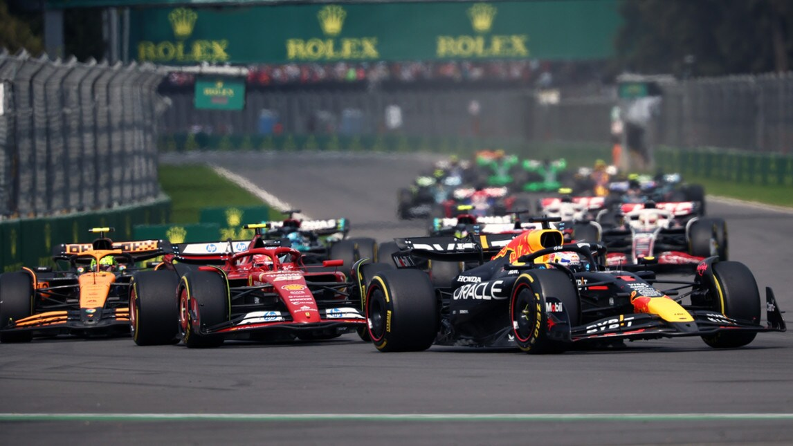
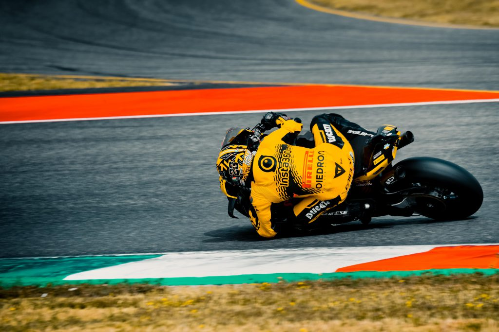
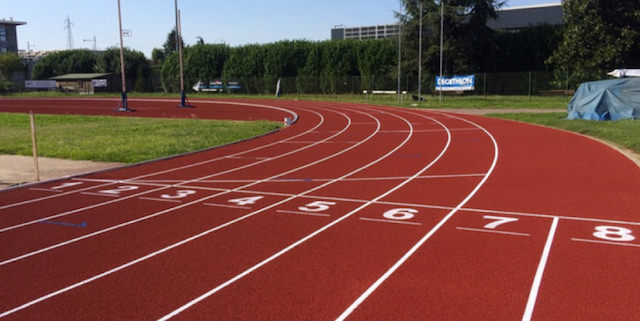
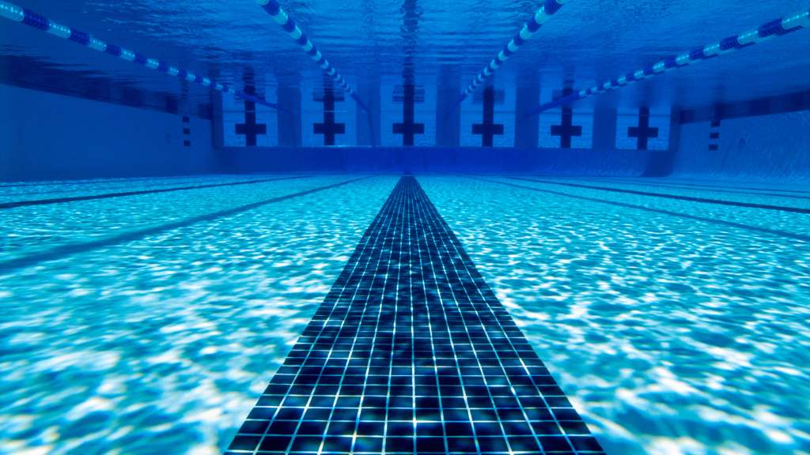
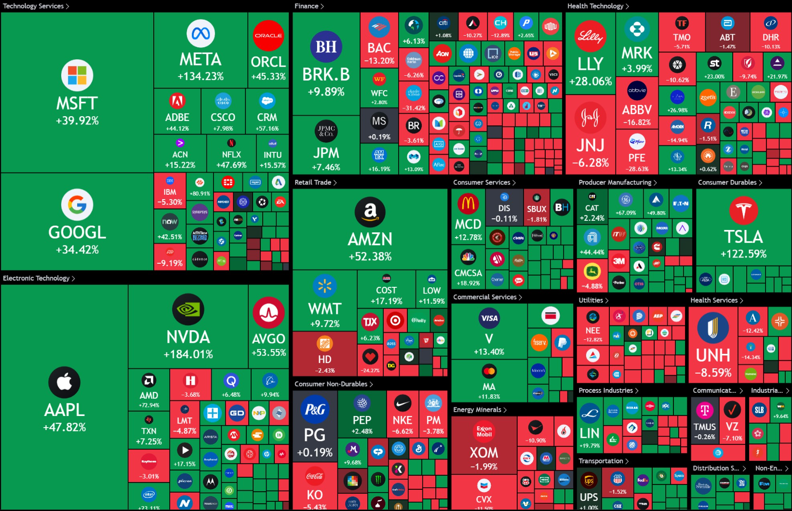

Interessi e Passioni
🎵 Clarinetto in una fanfara
Suono il clarinetto nella fanfara di Scanzo, un’esperienza che unisce musica, impegno e compagnia.

🏎️ Formula 1
Seguo con passione la Formula 1, ammirando la tecnologia e la strategia dietro ogni gara.

🏍️ MotoGP
Il brivido delle gare di MotoGP mi affascina, tra duelli, velocità, abilità alla guida e coraggio in pista.

🏃♂️ Corsa
Correre all’aria aperta mi aiuta a mantenere la mente libera e il corpo in forma.

🚴♂️ Bici
Pedalare in bicicletta è per me un modo di esplorare nuovi paesaggi e migliorare la resistenza fisica.

🏊♂️ Nuoto
Il nuoto è per me un’attività rigenerante, che allena il corpo e libera la mente, immerso nel silenzio dell’acqua.
⛷️ Sci
Adoro sciare: la velocità e la libertà sulle piste innevate sono un’emozione unica.

💻 Informatica
Mi interessa il mondo dell’informatica e delle nuove tecnologie, come IA, programmazione e nuovi prodotti tecnologici.

📈 Finanza
Studio la finanza personale e i mercati per prendere decisioni consapevoli e gestire al meglio le mie risorse.